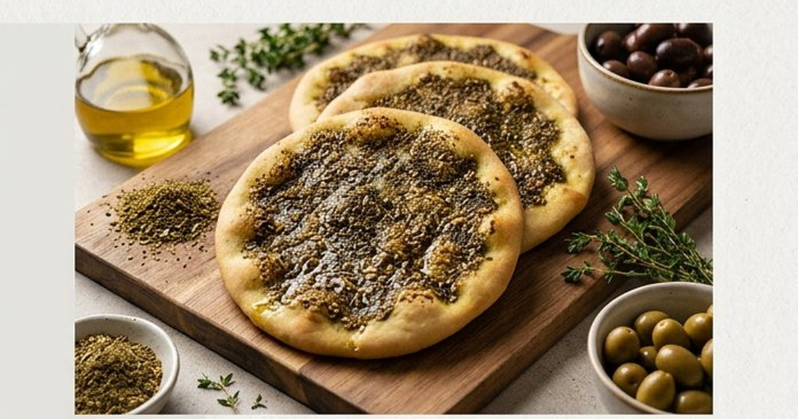
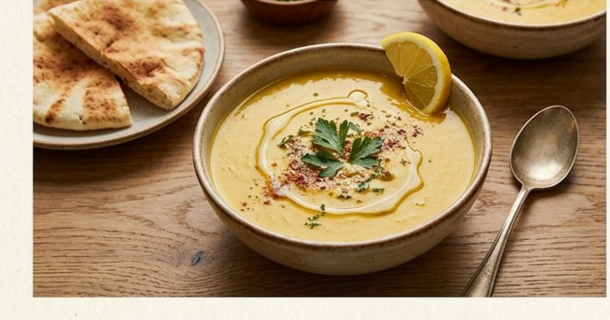
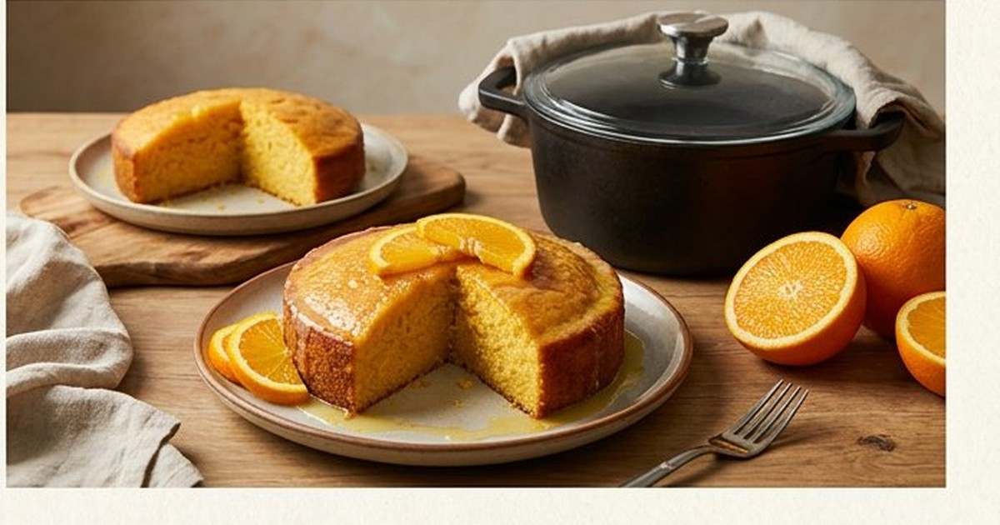
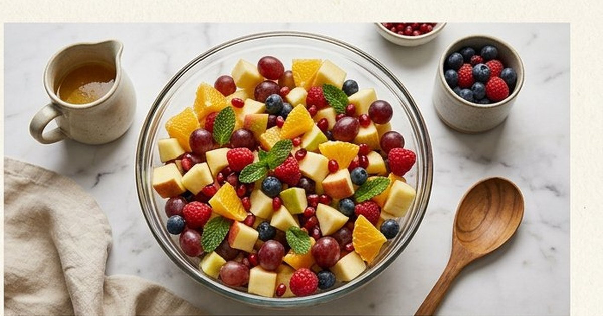

وصفات لذيذة
مناقيش الزعتر: وصفة بيتية سهلة واقتصادية خطوة بخطوة
طريقة مناقيش الزعتر في البيت بمقادير موزونة: عجينة طرية، تخمير صحيح، خلطة زعتر متوازنة وخبز على حرارة مرتفعة.
وصفة شوربة العدس التقليدية خطوة بخطوة: المكونات، طريقة التحضير، أسرار القوام الكريمي والنكهة، وأخطاء شائعة يجب تجنبها.

العدس الأحمر أو الأصفر المجروش لا يحتاج عادة إلى نقع طويل، لكن غسله وفحصه مهمان. زمن الطهي يتغير حسب نوع العدس وعمره وقوة النار.
أضف الماء تدريجيًا بعد الخلط إذا أصبحت الشوربة كثيفة. برّد البقايا سريعًا في علب غير عميقة، ولا تعتمد على الرائحة وحدها للحكم على السلامة.
قليل من الأطباق يمنح الدفء والراحة مثل وعاء شوربة العدس في يوم بارد أو عند الحاجة إلى وجبة خفيفة صحية. الطبق الذي يربطنا بذاكرة البيوت العربية، سهل التحضير، اقتصادي، وغني بالبروتين والألياف. إليك الوصفة التقليدية بكل أسرارها.
قبل إضافة الماء، حمّص العدس مع التوابل دقيقتين على نار هادئة. هذه الخطوة تفتح نكهة العدس وتضيف عمقًا لا تحصل عليه بالغلي المباشر.
أضف عصير الليمون بعد رفع القدر عن النار، وليس أثناء الطهي. الليمون إذا غلى يفقد نكهته ويعطي مرارة خفيفة. الليمون في النهاية يضيء كل النكهات.
قدّم الشوربة مع قطع خبز محمص بالفرن مدهونة بزيت الزيتون والثوم. الغمسة الأخيرة من الخبز في الشوربة هي ما يجعل الطبق لا يُنسى.
شوربة العدس طبق متواضع المكونات، عظيم النتيجة. باتباع هذه الخطوات والأسرار، ستحصل على قوام كريمي مخملي وطعم متوازن يحبه الجميع، من الصغار إلى الكبار. وجبة واحدة تكفي العائلة كاملة بأقل التكاليف.
رُوجعت المعلومات العامة في هذا المقال بالاستناد إلى المصادر التالية. الروابط الخارجية قد تُحدّث محتواها بمرور الوقت.

طريقة مناقيش الزعتر في البيت بمقادير موزونة: عجينة طرية، تخمير صحيح، خلطة زعتر متوازنة وخبز على حرارة مرتفعة.

طريقة عمل كيكة البرتقال الهشة بدون فرن باستخدام القدر: مكونات بسيطة، خطوات واضحة، ونصائح للحصول على كيك رطب وهش.

وصفة سلطة الفواكه المنعشة: اختيار الفواكه الموسمية، تقطيع وتحضير صحيح، صوص العسل والليمون والنعناع، وأفكار تقديم مميزة.